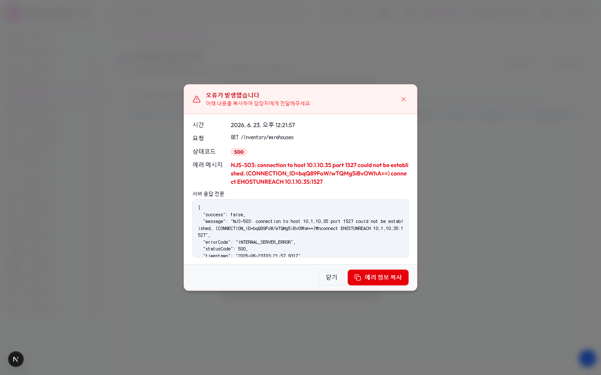

Route: /inventory/material-physical-inv
Status: FAIL / HTTP 200
| 기능/버튼 | 처리 방식 | 상태 | 비고 |
|---|---|---|---|
| 화면 로드 | GET /inventory/material-physical-inv | 실행 | HTTP 200 |
| 라우트 prewarm | 직접 HTTP 확인 | 실패 | HTTP 0, 120009ms |
| 초기 API 호출 | 브라우저 네트워크 수집 | 실행 | 16건 |
| 닫기 | 화면 버튼 목록화 | 목록화 | 후속 메뉴별 세부 시나리오 실행 대상 |
| 에러 정보 복사 | 화면 버튼 목록화 | 목록화 | 후속 메뉴별 세부 시나리오 실행 대상 |
| 다시 시도 | 화면 버튼 목록화 | 목록화 | 후속 메뉴별 세부 시나리오 실행 대상 |
| 🇰🇷 | 화면 버튼 목록화 | 목록화 | 후속 메뉴별 세부 시나리오 실행 대상 |
| 시스템관리자 | 화면 버튼 목록화 | 목록화 | 후속 메뉴별 세부 시나리오 실행 대상 |
| 대시보드 | 화면 버튼 목록화 | 목록화 | 후속 메뉴별 세부 시나리오 실행 대상 |
| 워크플로우 | 화면 버튼 목록화 | 목록화 | 후속 메뉴별 세부 시나리오 실행 대상 |
| 모니터링 | 화면 버튼 목록화 | 목록화 | 후속 메뉴별 세부 시나리오 실행 대상 |
| 기준정보 | 화면 버튼 목록화 | 목록화 | 후속 메뉴별 세부 시나리오 실행 대상 |
| 자재관리 | 화면 버튼 목록화 | 목록화 | 후속 메뉴별 세부 시나리오 실행 대상 |
| 제품재고관리 | 화면 버튼 목록화 | 목록화 | 후속 메뉴별 세부 시나리오 실행 대상 |
| 제품수불관리 | 화면 버튼 목록화 | 목록화 | 후속 메뉴별 세부 시나리오 실행 대상 |
| 자재주문관리 | 화면 버튼 목록화 | 목록화 | 후속 메뉴별 세부 시나리오 실행 대상 |
| 생산관리 | 화면 버튼 목록화 | 목록화 | 후속 메뉴별 세부 시나리오 실행 대상 |
| 검사관리 | 화면 버튼 목록화 | 목록화 | 후속 메뉴별 세부 시나리오 실행 대상 |
| 품질관리 | 화면 버튼 목록화 | 목록화 | 후속 메뉴별 세부 시나리오 실행 대상 |
| 설비관리 | 화면 버튼 목록화 | 목록화 | 후속 메뉴별 세부 시나리오 실행 대상 |
| 계측기관리 | 화면 버튼 목록화 | 목록화 | 후속 메뉴별 세부 시나리오 실행 대상 |
| 출하관리 | 화면 버튼 목록화 | 목록화 | 후속 메뉴별 세부 시나리오 실행 대상 |
| 영업관리 | 화면 버튼 목록화 | 목록화 | 후속 메뉴별 세부 시나리오 실행 대상 |
| 보세관리 | 화면 버튼 목록화 | 목록화 | 후속 메뉴별 세부 시나리오 실행 대상 |
| 소모품관리 | 화면 버튼 목록화 | 목록화 | 후속 메뉴별 세부 시나리오 실행 대상 |
| 외주관리 | 화면 버튼 목록화 | 목록화 | 후속 메뉴별 세부 시나리오 실행 대상 |
| 인터페이스 | 화면 버튼 목록화 | 목록화 | 후속 메뉴별 세부 시나리오 실행 대상 |
| 시스템관리 | 화면 버튼 목록화 | 목록화 | 후속 메뉴별 세부 시나리오 실행 대상 |
| 자재재고실사관리 | 화면 버튼 목록화 | 목록화 | 후속 메뉴별 세부 시나리오 실행 대상 |
| 실사 개시 | 화면 버튼 목록화 | 목록화 | 후속 메뉴별 세부 시나리오 실행 대상 |
| 새로고침 | 화면 버튼 목록화 | 목록화 | 후속 메뉴별 세부 시나리오 실행 대상 |
| 전체화면 보기 | 화면 버튼 목록화 | 목록화 | 후속 메뉴별 세부 시나리오 실행 대상 |
| AI 채팅 | 화면 버튼 목록화 | 목록화 | 후속 메뉴별 세부 시나리오 실행 대상 |
| 개선요청 등록 | 화면 버튼 목록화 | 목록화 | 후속 메뉴별 세부 시나리오 실행 대상 |
| 입력 필드 | DOM 수집 | 목록화 | 3개 |
| 선택 필드 | DOM 수집 | 목록화 | 1개 |
| 목록/그리드 | DOM 수집 | 목록화 | table 1, grid 0 |
| Method | URL | Status | OK |
|---|---|---|---|
| GET | /api/health | 200 | OK |
| GET | /api/db-info | 200 | OK |
| GET | /api/health | 200 | OK |
| GET | /api/db-info | 200 | OK |
| GET | /api/master/companies/public | 200 | OK |
| GET | /api/master/companies/public/plants?company=40 | 200 | OK |
| GET | /api/db-info | 200 | OK |
| GET | /api/auth/me | 503 | FAIL |
| GET | /api/master/com-codes/all-active | 500 | FAIL |
| GET | /api/system/configs/active | 500 | FAIL |
| GET | /api/system/comm-configs?commType=SERIAL&useYn=Y | 500 | FAIL |
| GET | /api/menu-categories/tree | 500 | FAIL |
| GET | /api/inventory/warehouses | 500 | FAIL |
| GET | /api/health | 200 | OK |
| GET | /api/inventory/warehouses | 500 | FAIL |
| GET | /api/db-info | 200 | OK |
error: Failed to load resource: net::ERR_NETWORK_CHANGED
error: Failed to load resource: the server responded with a status of 503 (Service Unavailable)
error: Failed to load resource: the server responded with a status of 500 (Internal Server Error)
error: Failed to load resource: the server responded with a status of 500 (Internal Server Error)
warning: [SysConfig] 환경설정 로드 실패: AxiosError: Request failed with status code 500
at settle (http://localhost:3002/_next/static/chunks/node_modules__pnpm_4f6e1a4c._.js:9169:16)
at XMLHttpRequest.onloadend (http://localhost:3002/_next/static/chunks/node_modules__pnpm_4f6e1a4c._.js:9694:225)
at Axios.request (http://localhost:3002/_next/static/chunks/node_modules__pnpm_4f6e1a4c._.js:10500:49)
at async fetchConfigs (http://localhost:3002/_next/static/chunks/apps_frontend_src_931508ec._.js:349:29)
error: Failed to load resource: the server responded with a status of 500 (Internal Server Error)
error: Failed to load resource: the server responded with a status of 500 (Internal Server Error)
error: Failed to load resource: the server responded with a status of 500 (Internal Server Error)
error: Failed to load resource: the server responded with a status of 500 (Internal Server Error)
requestfailed: GET /api/material/physical-inv?limit=5000&countMonth=2026-06 net::ERR_NETWORK_CHANGED
api: GET /api/auth/me 503
api: GET /api/master/com-codes/all-active 500
api: GET /api/system/configs/active 500
api: GET /api/system/comm-configs?commType=SERIAL&useYn=Y 500
api: GET /api/menu-categories/tree 500
api: GET /api/inventory/warehouses 500
api: GET /api/inventory/warehouses 500

오류가 발생했습니다 아래 내용을 복사하여 담당자에게 전달해주세요 시간 2026. 6. 23. 오후 12:21:57 요청 GET /inventory/warehouses 상태코드 500 에러 메시지 NJS-503: connection to host 10.1.10.35 port 1527 could not be established. (CONNECTION_ID=bqQ89FoW/wTQMg5iBvOWhA==) connect EHOSTUNREACH 10.1.10.35:1527 서버 응답 전문 { "success": false, "message": "NJS-503: connection to host 10.1.10.35 port 1527 could not be established. (CONNECTION_ID=bqQ89FoW/wTQMg5iBvOWhA==)\nconnect EHOSTUNREACH 10.1.10.35:1527", "errorCode": "INTERNAL_SERVER_ERROR", "statusCode": 500, "timestamp": "2026-06-23T03:21:57.931Z", "path": "/api/v1/inventory/warehouses" } 닫기 에러 정보 복사 시스템 연결 확인 서버와 데이터베이스 연결 상태를 확인하고 있습니다. 서버 연결 확인 http://localhost:3002/api 데이터베이스 연결 확인 10.1.10.35:1527 / JSHNSMES test NJS-503: connection to host 10.1.10.35 port 1527 could not be established. (CONNECTION_ID=nH8IVb2gK9tw2N4nx84d6g==) connect EHOSTUNREACH 10.1.10.35:1527 연결에 실패했습니다. 네트워크 상태를 확인 후 다시 시도해 주세요. 다시 시도 H HARNESS MES 🇰🇷 40 / 1000 JSHNSMES @ 10.1.10.35 시스템관리자 대시보드 워크플로우 모니터링 기준정보 자재관리 제품재고관리 제품수불관리 자재주문관리 생산관리 검사관리 품질관리 설비관리 계측기관리 출하관리 영업관리 보세관리 소모품관리 외주관리 인터페이스 시스템관리 대시보드 자재재고실사관리 자재재고실사 관리 실사 세션을 개시·완료하고 PDA 스캔 수량을 모니터링합니다. 실사 개시 새로고침 창고: 전체 창고 품목코드 품목명 자재시리얼 시스템수량 실사수량